BER MSc — Promenade analysis
18 saved images: Promenade captures/exports and supplementary calculations. All results are simulated; one run per scenario.
Findings, limitations and suggested paper text · Exact metrics
01 simulated turnaround comparison
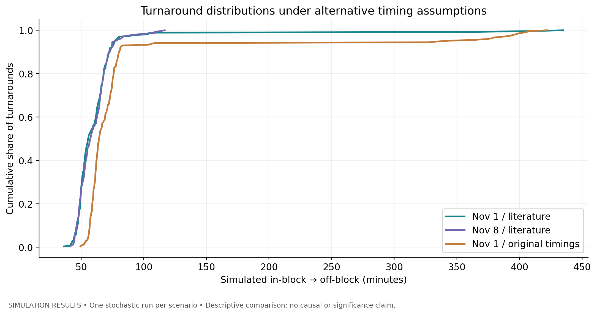
02 service duration comparison
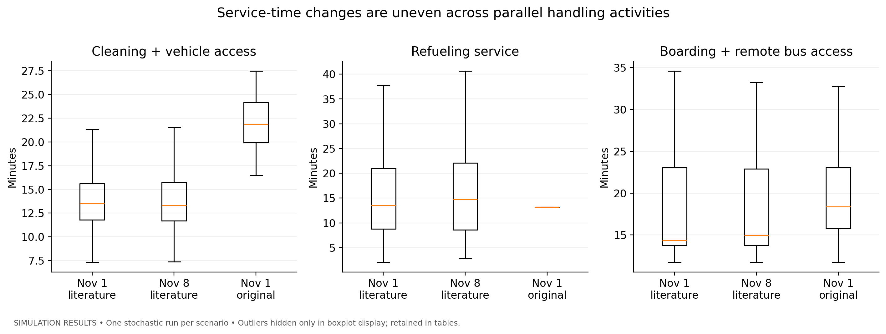
03 resource waiting
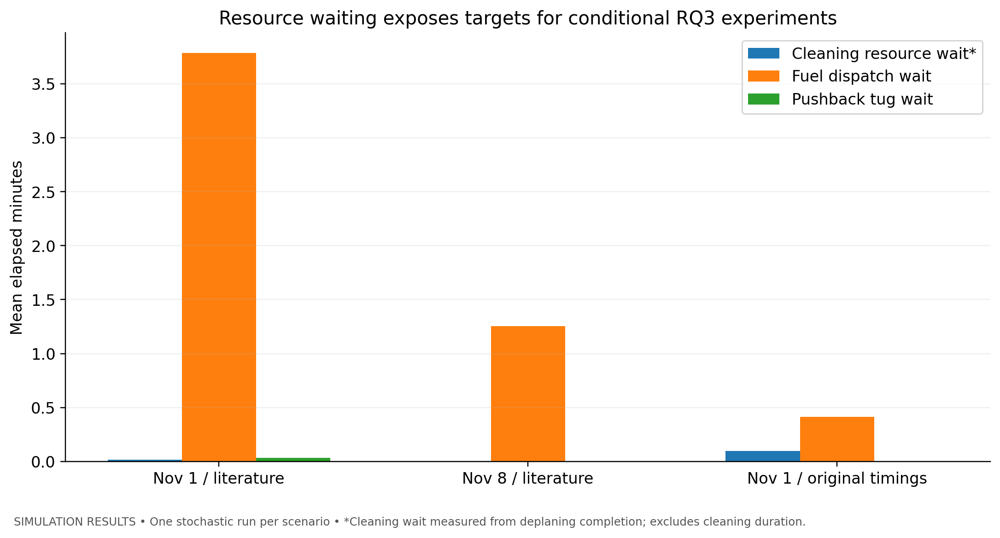
04 observed proxy vs simulation
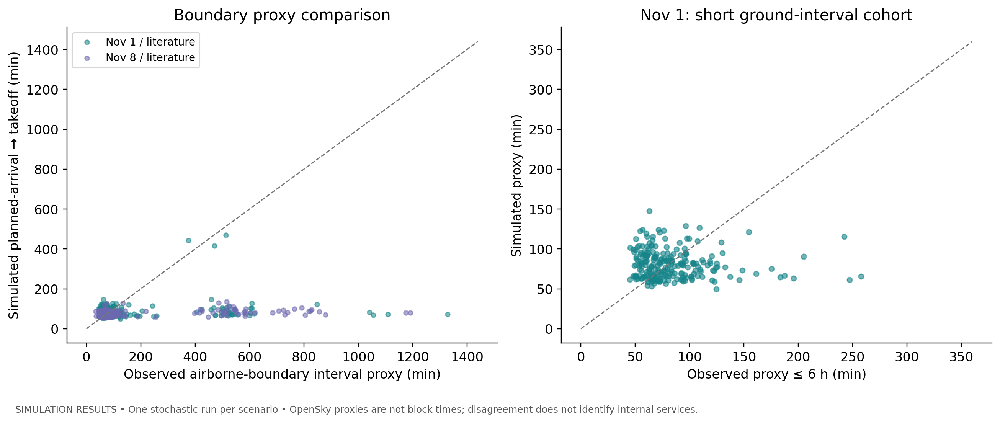
05 inherited policy diagnostic
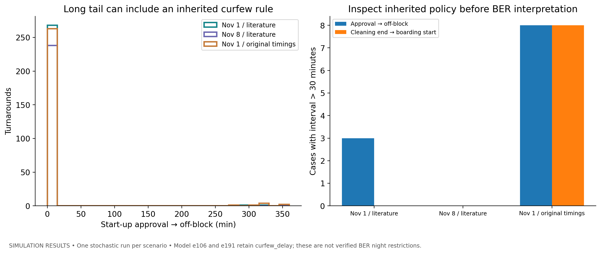
06 aircraft identity release delay
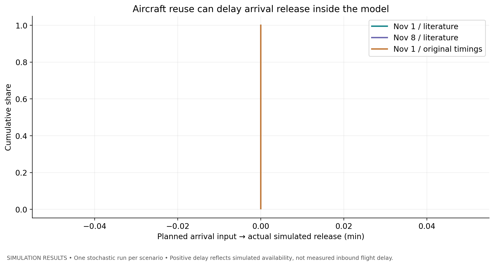
06a shared resource workload
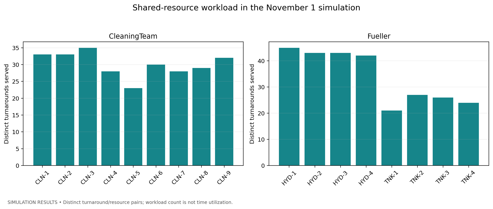
06b last ready handling branch
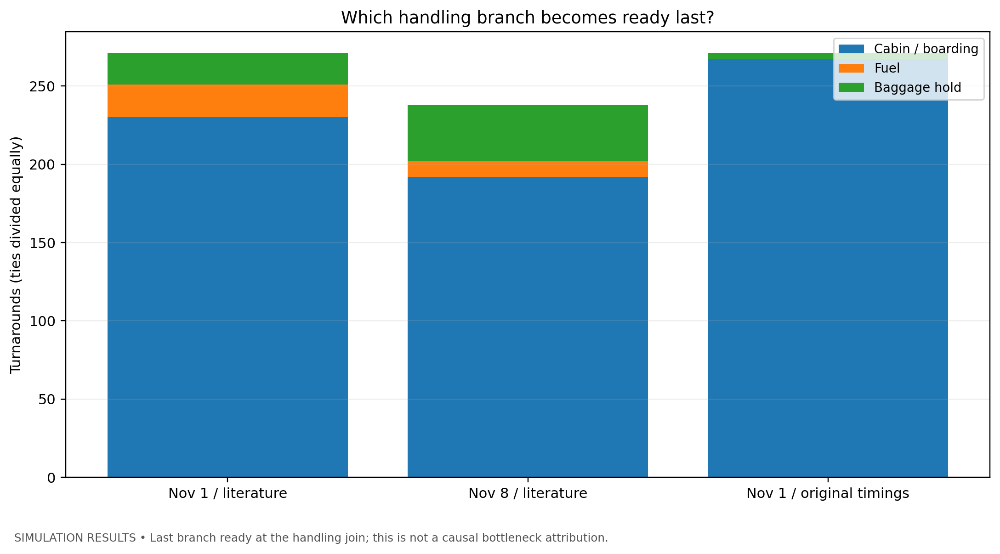
07 promenade nov1 overview
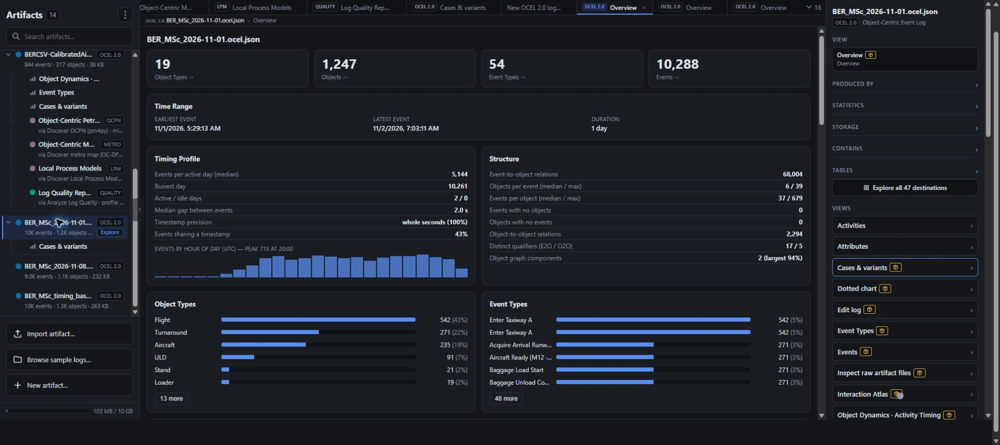
08 promenade turnaround variants
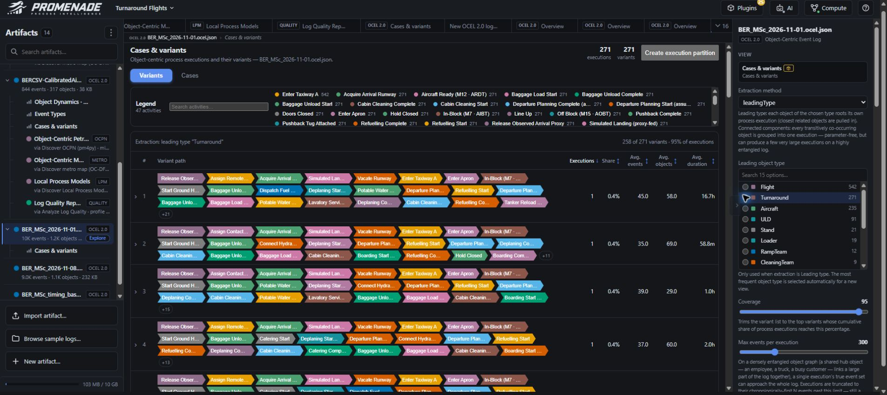
09 promenade turnaround performance spectrum
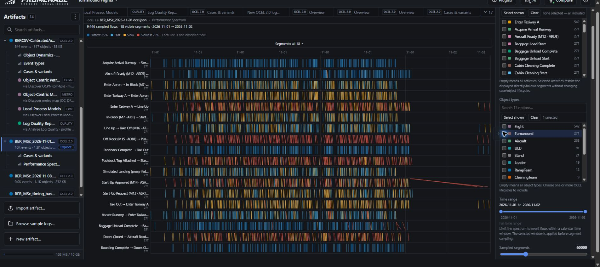
10 promenade nov1 block turnaround
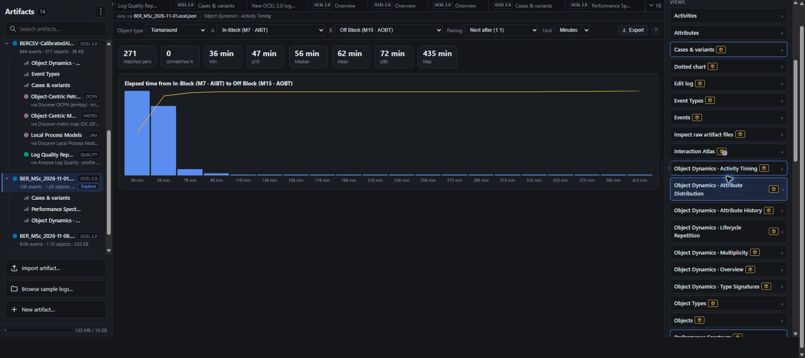
11 promenade nov1 block turnaround export
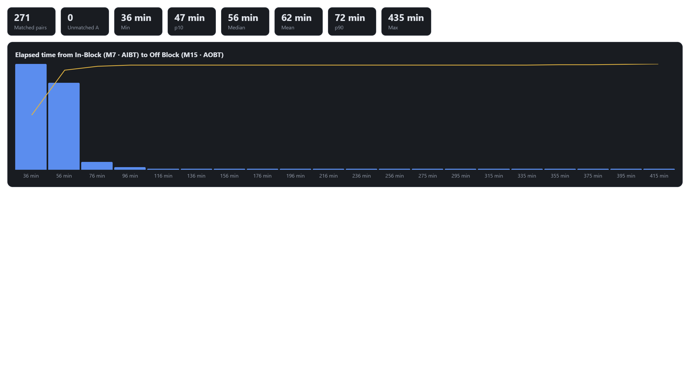
12 promenade fueling duration
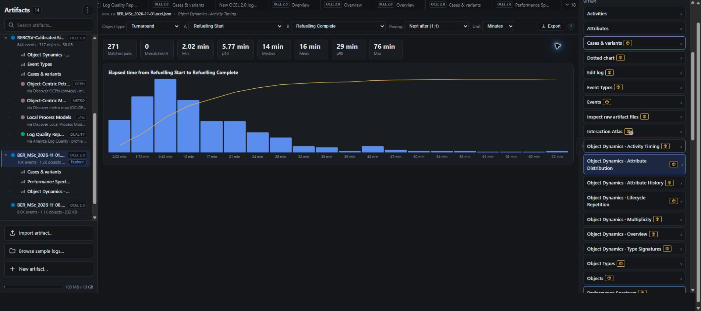
13 promenade fueling duration export
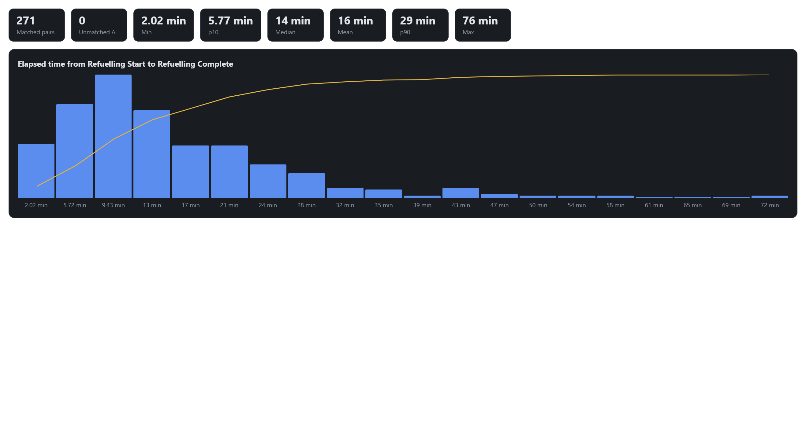
14 promenade nov8 block turnaround
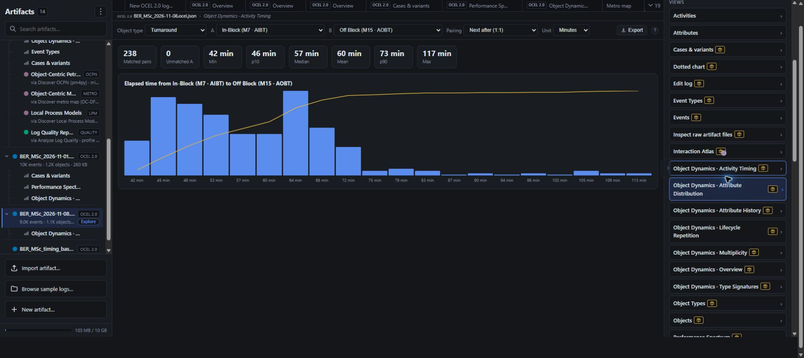
15 promenade original timing block turnaround
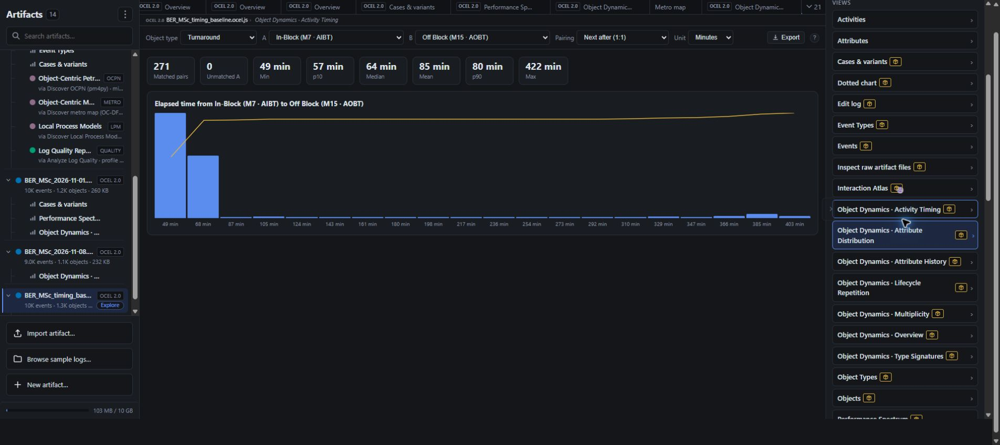
16 promenade discovered ocdfg
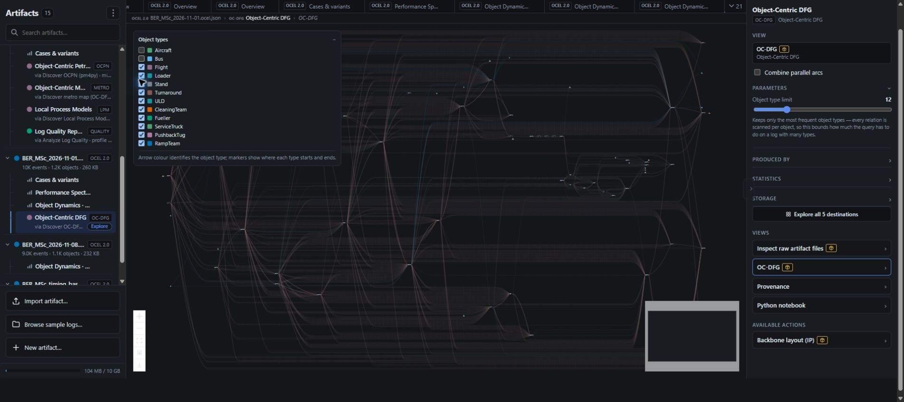